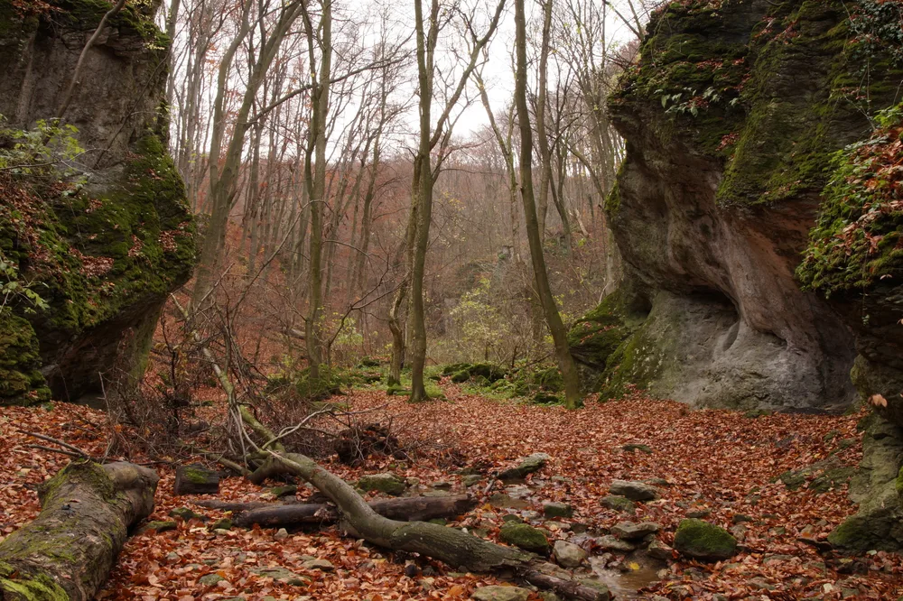
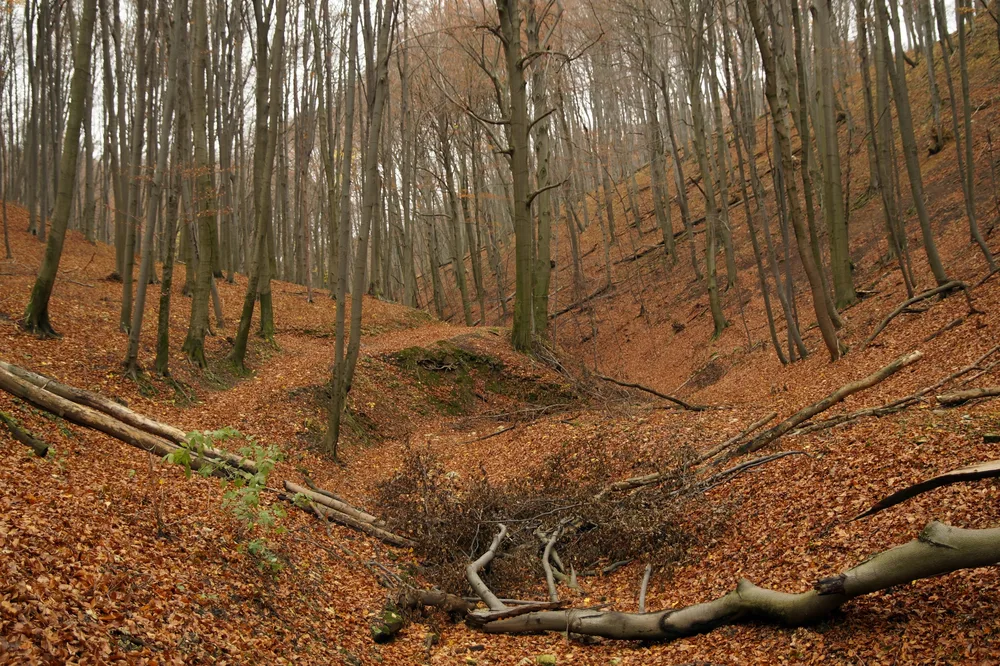
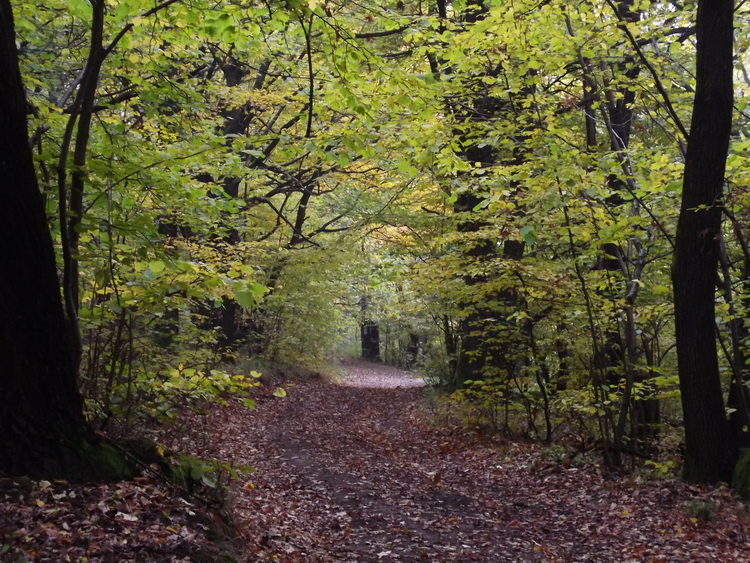
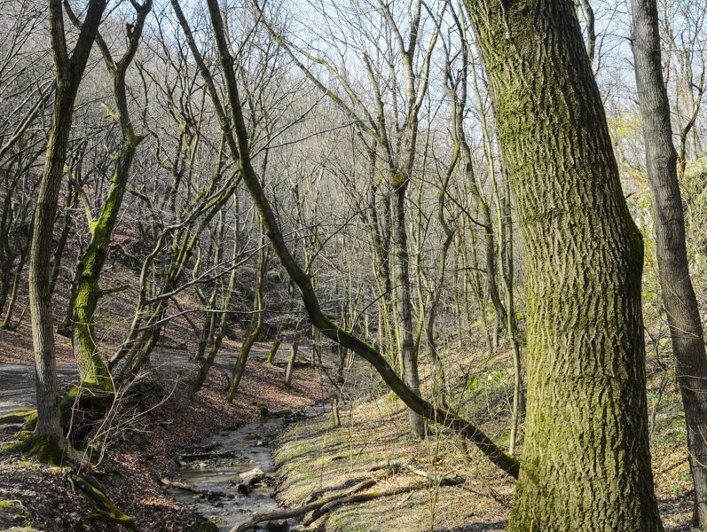
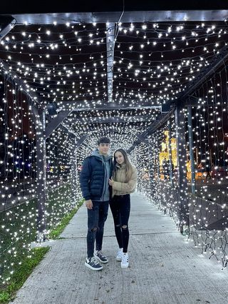

Az ősz a mérsékelt öv egyik évszaka. Trópusi, illetve száraz és hideg égövi tájakon nem létezik. A Föld északi féltekéjén szeptember, október és november, míg a Föld déli féltekéjén március, április és május az ősz hónapjai. Az ősz a nyár és a tél között helyezkedik el, fő jellemzője a napok rövidülése, a hőmérséklet csökkenése és a lombhullató fák lombjának zöldről sárgává-pirossá színeződése majd lehullása. Hagyományosan a legtöbb országban ősszel nyitnak az iskolák, indul a tanítás. Ősz a termények betakarításának, a szőlő szüretelésének ideje is. Az ősz fő ünnepei az elmúláshoz kapcsolódnak: november 1. előestéje az angolszász országokban Halloween, november 1. Mindenszentek és november 2. Halottak napja.
Az ősz folyamán nem nagyon volt se lelki se fizikai erőm kimozdulni orrhonról, így barátnőmmel közös döntés alapján jutottunk el arra a pontra, hogy elegyünk túrázni két helyre is.Az első cél az ördög árok volt ami egy időszakos patak a duna folyam jobboldali mellékvize által vájt sziklás árok, barlangal.
(a képre kattintva nagyíthatod ki a képet)Itt van róla kettő kép:
|  |  |
Másodszorra dobogókőn voltunk nagyon szép volt de kevés volt az olyan rész ahol lehetett volna bármit is látni mert nagyon sűrű volt a köd.De sikerült erről is két szép fotót készítenünk.
(a képre kattintva nagyíthatod ki a képet)Itt van róla kettő kép:
|  |  |
|  |
{kind=link}
{kind=link}
{kind=link}
{kind=link}